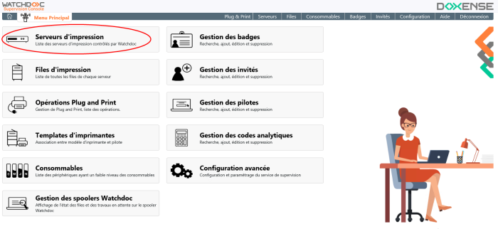
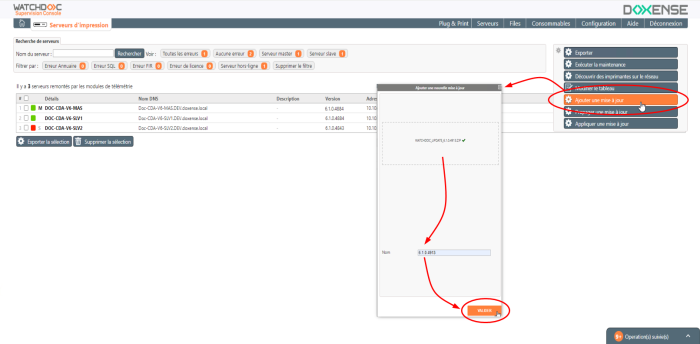
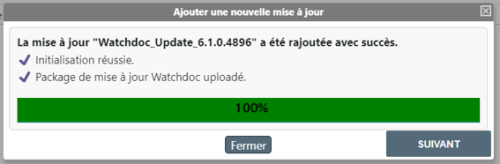
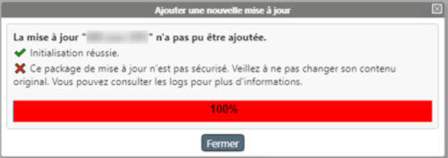
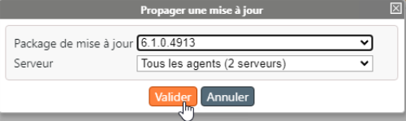
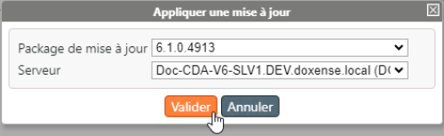
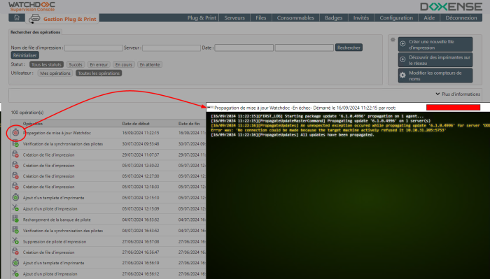

Principe
La Console de Supervision permet de mettre à jour Watchdoc.
A partir de la version 6.1, lorsque Watchdoc est configuré en Domaine (un serveur master et un ou plusieurs serveurs dépendants), WSC permet de propager la mise à jour du serveur master vers l'ensemble des autres serveurs qui en dépendent.
Cette procédure est valable lorsque le mode de synchronisation entre master et slaves est bidirectionnel ou unidirectionnel (aussi appelé mode mailbox Dans Watchdoc, mode de synchronisation unidirectionnel.
Dans ce mode, c'est un serveur slave qui appelle le master et ce dernier peut alors répondre dans la session de communication établie par le serveur.).
Dans Watchdoc, mode de synchronisation unidirectionnel.
Dans ce mode, c'est un serveur slave qui appelle le master et ce dernier peut alors répondre dans la session de communication établie par le serveur.).
Etapes
Afin de pouvoir propager la mise à jour sur les serveurs slaves, il est nécessaire d'avoir d'abord mis à jour le serveur master manuellement.
-
mise à jour de Watchdoc sur le serveur master ;
-
mise à jour de WSC sur le serveur master ;
-
propagation de la mise à jour de Watchdoc depuis le serveur master vers les serveurs slaves.
Mise à jour du serveur Master
Procédez à la mise à jour de Watchdoc et WSC sur le serveur master (cf. Mettre à jour Watchdoc et Mettre à jour WSC).
Accéder aux outils de propagation
-
Une fois le serveur master mis à jour, accédez à l'interface d'administration du WSC en tant qu'administrateur.
-
Depuis le Menu Principal, click Print Serveurs d'impression de WSC :

-
L'interface Serveurs d'impression affiche tous les serveurs supervisés.
-
Devant les noms des serveurs, la lettre M indique les serveurs master et la lettre S les serveurs slaves.
-
Vérifiez l'état des serveurs du domaine (maîtres et esclaves) : ils doivent être accessibles (coche verte ou orange).
Ajouter une mise à jour
-
Cliquez sur le bouton Ajouter une mise à jour :
-
dans l'interface Ajouter une mise à jour, cliquez dans le cadre Package, pour parcourir votre espace de travail à la recherche du package ;
-
une fois le package validé (coche verte) attribuez un Nom.
N.B. : attention à ne pas ajouter un espace après le nom, ce qui provoquerait une erreur lors du chargement de la mise à jour ;
-
cliquez sur Valider :

è Le curseur indique en vert la progression du chargement du package de mise à jour :

è Si le chargement échoue, le curseur devient rouge et un message informe de la nature du problème : par exemple "Ce package de mise à jour n'est pas sécurisé" (cf. dépannage "Impossible de mettre à jour : package non-sécurisé").

Propager la mise à jour
-
Une fois le fichier de mise à jour ajouté, cliquez sur le bouton Propager une mise à jour (situé sous le bouton Ajouter une mise à jour).
N.B. : si le bouton Propager renvoie vers l'interface Ajouter une nouvelle mise à jour, c'est que WSC n'a pas fini de vérifier la validité du package de la nouvelle version (notamment son certificat) ou que je package téléchargé est corrompu.
-
Dans l'interface Propager une mise à jour, sélectionnez le fichier de mise à jour à appliquer.
-
Sélectionnez ensuite le serveur ou l'ensemble des serveurs sur lesquels propager le fichier de mise à jour.
-
Cliquez sur le bouton Valider pour lancer la propagation des fichiers de mise à jour sur les serveurs désignés.

è un rapport vous informe du succès de l'opération.
Appliquer la mise à jour
-
Une fois le fichier de mise à jour ajouté, cliquez sur le bouton Appliquer une mise à jour (situé sous le bouton Propager une mise à jour).
N.B. : si le bouton Appliquer renvoie vers l'interface Ajouter une nouvelle mise à jour, c'est que WSC n'a pas fini de vérifier la validité du package de la nouvelle version (notamment son certificat) ou que je package téléchargé est corrompu.
-
Dans l'interface Appliquer une mise à jour, sélectionnez le fichier de mise à jour à appliquer.
-
Sélectionnez ensuite le serveur ou l'ensemble des serveurs sur lesquels appliquer le fichier de mise à jour.
-
Cliquez sur le bouton Valider pour lancer la mise à jour des serveurs désignés.

è un rapport vous informe du succès de l'opération.
Vérifier la mise à jour
Pour vérifier la mise à jour sur l'ensemble du domaine, vous pouvez procéder de 2 manières :
-
soit vous rendre dans la liste des serveurs (Menu principal > Serveurs d'impression) pour y vérifier les numéros de version. Si la mise à jour s'est bien déroulée, tous les serveurs du domaine ont la même version ;
-
soit vous rendre dans les opérations Plug and Print (Menu principal > Opérations Plug and Print) pour y repérer l'opération de propagation de la mise à jour et accéder au rapport d'opération :
